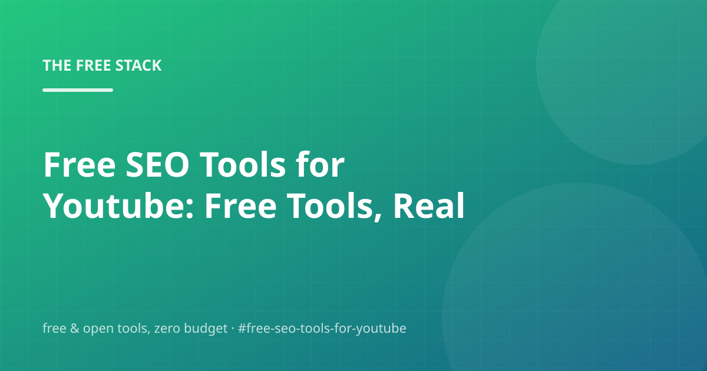

Free SEO Tools for Youtube: Free Tools, Real Trade-offs

You don't need a budget to get good at free seo tools for youtube. You need a map of the free tools, and an honest read on the trade-offs between them. Here's that map — researched, written and fact-checked by the same engine that publishes this blog.
We'll walk through Bing Webmaster Tools, Json-ld Structured Data, Google Search Console, and Automate the boring parts — and finish with the questions people actually ask, so you can check before you buy anything. You shouldn't have to buy anything.
Bing Webmaster Tools
First, the thing that actually matters: Bing Webmaster Tools is the free, often-overlooked sibling of Search Console — and Bing's index is also used by Copilot.
In practice that means: Verification is one DNS record, sitemap submission is one click, and you get indexing status plus traffic data for the second-largest engine. Fifteen minutes of setup, zero dollars, meaningful extra reach.
For a personal project or side business, this covers you without breaking a sweat.
Json-ld Structured Data
Worth spending ten minutes on: JSON-LD structured data (Schema.org) is a free standard that tells search engines exactly what your page is.
In other words: Marking a post as an Article with author and dates, and marking its FAQ block as a FAQPage, is what powers rich results. It is a machine-readable summary the page already contains — no service, no cost, and this engine generates it for every post it writes.
Keep it this simple and you'll be ahead of most tutorials out there.
Google Search Console
Skip the fluff and start here: Google Search Console is free and it is the single most valuable SEO tool there is.
In other words: Verify the site (a file or DNS record — both free), submit the sitemap, and you get the queries that actually bring people, the pages that rank, and indexing problems caught early. Nothing on a paid SEO stack replaces this data, and it costs nothing.
The links in the sources section go straight to the primary docs.
- Add the site property and verify with a DNS TXT record or verification file
- Submit sitemap.xml under Sitemaps
- Check Performance weekly — note the queries worth writing more about
Automate the boring parts
First, the thing that actually matters: Anything you do twice by hand should become a script. That's the entire discipline of free automation.
Which, in day-to-day terms, means: A cron expression, a webhook, or a scheduled workflow costs nothing to run and buys back an hour every week. Start with one small automation — a nightly backup, a feed check, a deploy on push — and add more only when the first one proves itself.
For a personal project or side business, this covers you without breaking a sweat.
Frequently asked questions
How much do I need to know before trying free seo tools for youtube?
JSON-LD structured data (Schema.org) is a free standard that tells search engines exactly what your page is. Treat that as the working assumption and re-check the docs once a quarter.
Is free seo tools for youtube actually free?
Less than you'd think. Bing Webmaster Tools is the free, often-overlooked sibling of Search Console — and Bing's index is also used by Copilot. Start there and only add pieces when you feel actual pain.
What would you do first if you only had one free afternoon?
Google Search Console is free and it is the single most valuable SEO tool there is. Treat that as the working assumption and re-check the docs once a quarter.